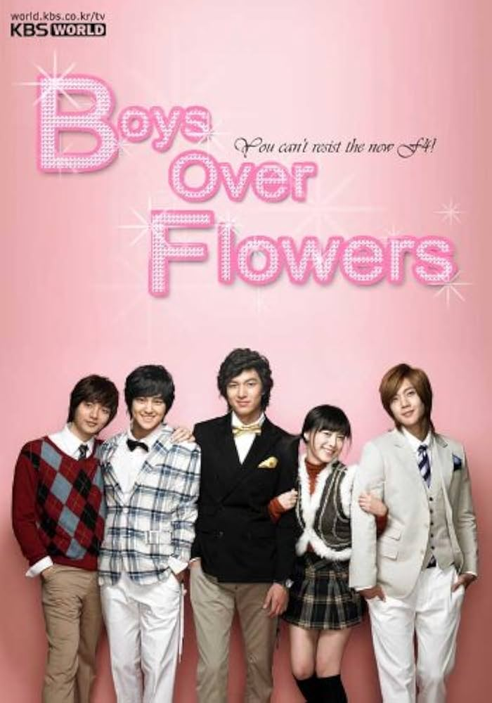
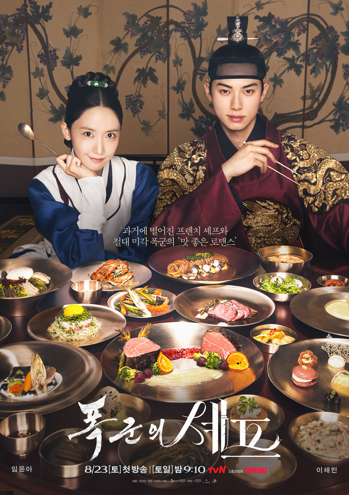

❮
Recordando la Juventud
La Historia de la Secretaria Kim
Un Romance en King The Land
Explora nuestro sitio
❯
RECUERDOS DE LA JUVENTUD
QUE LE OCURRE A LA SECRETARIA KIM
ELLA ERA BONITA
KING THE LAND
EL QUE NO GANA NO AMA
SI LA VIDA TE DA MANDARINAS
MI ADORABLE DEMONIO

LOS CHICOS SON MEJORES QUE LAS FLORES

APPETIT YOUR MAJESTY
CASATE CON MI ESPOSO
EL GENIO Y LOS DESEOS